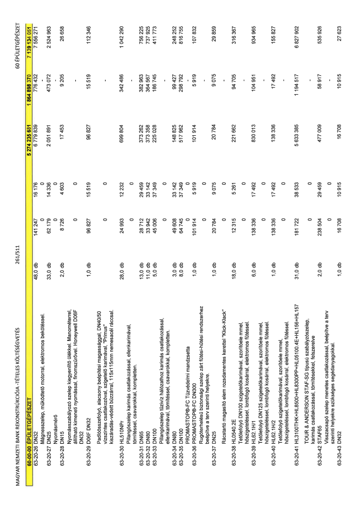

| Tétel | Menny. | Egys. | Anyag e.ár (net HUF) | Díj e.ár (net HUF) | Anyag összesen (net HUF) | Díj összesen (net HUF) | Anyag+Díj összesen (net HUF) |
|---|---|---|---|---|---|---|---|
| 60-00-00 ÉPÜLETGÉPÉSZET | NaN | NaN | 0 | 0 | 5 274 235 681 | 1 864 898 370 | 7 139 134 051 |
| 63-20-26 DN32 | 48,0 | db | 141 247 | 16 176 | 6 779 839 | 776 432 | 7 556 271 |
| Mágnesszelep, működtető motorral, elektromos bekötéssel. | 0 | 0 | 0 | 0 | 0 | 0 | 0 |
| 63-20-27 DN25 | 33,0 | db | 62 179 | 14 336 | 2 051 891 | 473 072 | 2 524 963 |
| Nyomásmérő | 0 | 0 | 0 | 0 | 0 | 0 | 0 |
| 63-20-28 DN15 | 2,0 | db | 8 726 | 4 603 | 17 453 | 9 205 | 26 658 |
| Nyomásszabályozó szelep kiegyenlítő ülekkel. Manométerrel, állítható kimeneti nyomással, finomszűrővel. Honeywell D06F DN32 | 0 | 0 | 0 | 0 | 0 | 0 | 0 |
| 63-20-29 D06F DN32 | 1,0 | db | 96 827 | 15 519 | 96 827 | 15 519 | 112 346 |
| Padlóösszefolyó, alacsony beépítési magassággal, DN40/50 vízszintes csatlakozóval, szigetelő karimával, "Primus" kiszáradás-védett bűzzárral, 115x115mm nemesacél ráccsal. | 0 | 0 | 0 | 0 | 0 | 0 | 0 |
| 63-20-30 HL510NPr | 28,0 | db | 24 993 | 12 232 | 699 804 | 342 486 | 1 042 290 |
| Pillangószelep karimás csatlakozással, ellenkarimával, tömítéssel, csavarokkal, kompletten. | 0 | 0 | 0 | 0 | 0 | 0 | 0 |
| 63-20-31 DN65 | 13,0 | db | 28 712 | 29 459 | 373 262 | 382 963 | 756 225 |
| 63-20-32 DN80 | 11,0 | db | 33 942 | 33 142 | 373 358 | 364 567 | 737 925 |
| 63-20-33 DN100 | 5,0 | db | 45 006 | 37 349 | 225 028 | 186 745 | 411 773 |
| Pillangószelep tűzivíz hálózathoz karimás csatlakozással, ellenkarimával, tömítéssel, csavarokkal, kompletten. | 0 | 0 | 0 | 0 | 0 | 0 | 0 |
| 63-20-34 DN80 | 3,0 | db | 49 608 | 33 142 | 148 825 | 99 427 | 248 252 |
| 63-20-35 DN100 | 8,0 | db | 64 745 | 37 349 | 517 962 | 298 792 | 816 755 |
| PROMASTOP®-FC Tűzvédelmi mandzsetta | 0 | 0 | 0 | 0 | 0 | 0 | 0 |
| 63-20-36 PROMASTOP®-FC DN300 | 1,0 | db | 101 914 | 5 919 | 101 914 | 5 919 | 107 832 |
| Rugóterhelésű biztonsági szelep zárt fűtési-hűtési rendszerhez beépítve a terv szerinti helyekre. | 0 | 0 | 0 | 0 | 0 | 0 | 0 |
| 63-20-37 DN25 | 1,0 | db | 20 784 | 9 075 | 20 784 | 9 075 | 29 859 |
| Rácstartó magasító elem rozsdamentes kerettel "Klick-Klack" | 0 | 0 | 0 | 0 | 0 | 0 | 0 |
| 63-20-38 HL0540.2E | 18,0 | db | 12 315 | 5 261 | 221 662 | 94 705 | 316 367 |
| Tetőlefolyó DN100 szigetelőkarimával, szorítóelemmel, hőszigeteléssel, lombfogó kosárral, elektromos fűtéssel. | 0 | 0 | 0 | 0 | 0 | 0 | 0 |
| 63-20-39 HL62.1H/1 | 6,0 | db | 138 336 | 17 492 | 830 013 | 104 951 | 934 965 |
| Tetőlefolyó DN125 szigetelőkarimával, szorítóelemmel, hőszigeteléssel, lombfogó kosárral, elektromos fűtéssel. | 0 | 0 | 0 | 0 | 0 | 0 | 0 |
| 63-20-40 HL62.1H/2 | 1,0 | db | 138 336 | 17 492 | 138 336 | 17 492 | 155 827 |
| Tetőlefolyó szigetelőkarimával, szorítóelemmel, hőszigeteléssel, lombfogó kosárral, elektromos fűtéssel. | 0 | 0 | 0 | 0 | 0 | 0 | 0 |
| 63-20-41 HL3100THK+HL8500+HL8300PP+HL05100.4E+HL156+HL157 | 31,0 | db | 181 722 | 38 533 | 5 633 385 | 1 194 517 | 6 827 902 |
| TOUR & ANDERSON STAF-SG típusú szabályzószelep, karimás csatlakozással, tömítésekkel, felszerelve | 0 | 0 | 0 | 0 | 0 | 0 | 0 |
| 63-20-42 STAF65 | 2,0 | db | 238 504 | 29 459 | 477 009 | 58 917 | 535 926 |
| Visszacsapó szelep menetes csatlakozással, beépítve a terv szerinti helyekre szükséges segédanyagokkal. | 0 | 0 | 0 | 0 | 0 | 0 | 0 |
| 63-20-43 DN32 | 1,0 | db | 16 708 | 10 915 | 16 708 | 10 915 | 27 623 |
